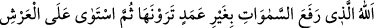
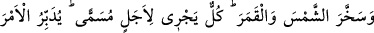
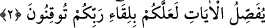

“cennetten çıkın” âyeti (el-Bakara, 2/38) gereğince cennetten çıkarak indiği o en aşağı
tabakadan kurtarır.
Bilesin ki “Allah tarafından indirilen” tâbiri, Kur’ân-ı Kerîm’in sarih nassı ile sâbit
olan hükümlerde olduğu gibi hem açıkça indirilmiş bulunan hükümleri hem de sünnet,
icmâ ve kıyas ile sâbit olan hükümlerde olduğu gibi zımnen indirilmiş olan hükümleri
içine alır. Bu bakımdan bu hükümlerin hepsi haktır.
“Fakat insanların çoğu” aşırı derecede inatçı oldukları, doğru yoldan çıktıkları,
mânâları üzerinde iyice düşünmedikleri, muhtevâsını tam olarak kavrayamadıkları için
Kur’ân’a “inanmazlar” Onun hak olduğunu ve kendisine sarılanları Allah’a ulaştıracak
bir ilâhî ip olduğunu inkâr ederler. Ancak onların inkâr edip onu görmemesi, Allah
katından indirilmiş bir hak olmasına ters düşmez. Çünkü körler görmese de güneş yine
güneştir. Tat alma duygusunu kaybedenler tadına varamasa da bal yine baldır. Zâten
terbiye, inkâr edene ve bâtıl peşinde koşana değil, istîdadlı ve kabiliyetli olana fayda
sağlar.
Molla Câmî der ki:
Kabiliyetsiz olana terbiyenin hiç faydası olmaz,
Onu bütün mahlûkattan daha kıymetli ve nazlı tutsan da.
Yağmurun neminden asla yeşillik ve hoşluk olmaz,
Duvarın başına diktiğin kuru dikenden.
Cenab-ı Hak daha sonra rubûbiyyet ve ahadiyyetin delillerini açıklamaya başlayarak
şöyle buyurur:
2. Gökleri görebileceğiniz bir direk olmadan yükselten, sonra Arş’a istivâ eden,
güneşi ve ayı emrine boyun eğdiren Allah’tır. (Bunların) her biri muayyen bir vakte
kadar akıp gitmektedir. O, Rabbinize kavuşacağınıza kesin olarak inanmanız için
her işi düzenleyip âyetleri açıklamaktadır.
“Gökleri görebileceğiniz bir direk” ve sütun “olmadan.” “Görülen direk
olmaması”nın birkaç ihtimali vardır:
1- Direklerin de görme fiilinin de olmaması muhtemeldir. Yâni, direk yoktur ki
görülebilsin.
2- Göklerin görülemeyen direkleri -ki bu ilâhî kudrettir- olması, fakat sâdece görme